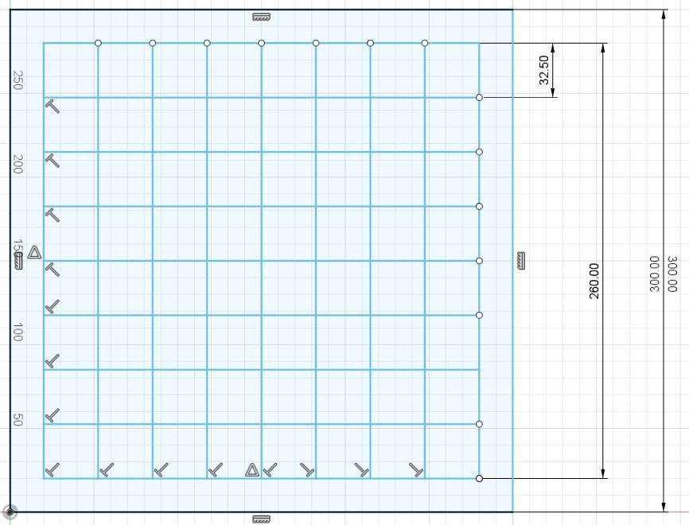
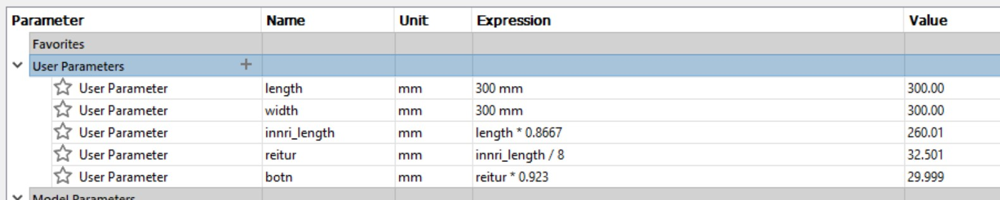
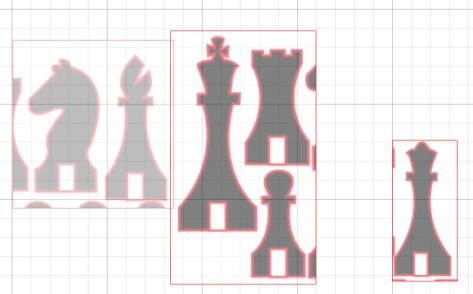
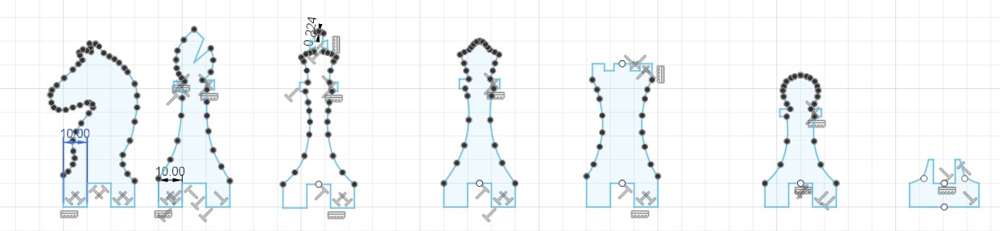
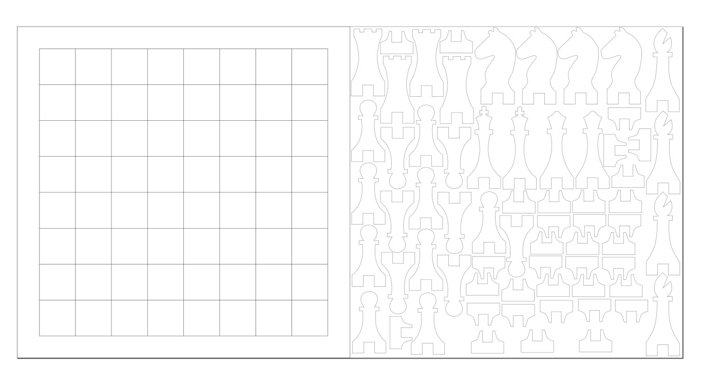
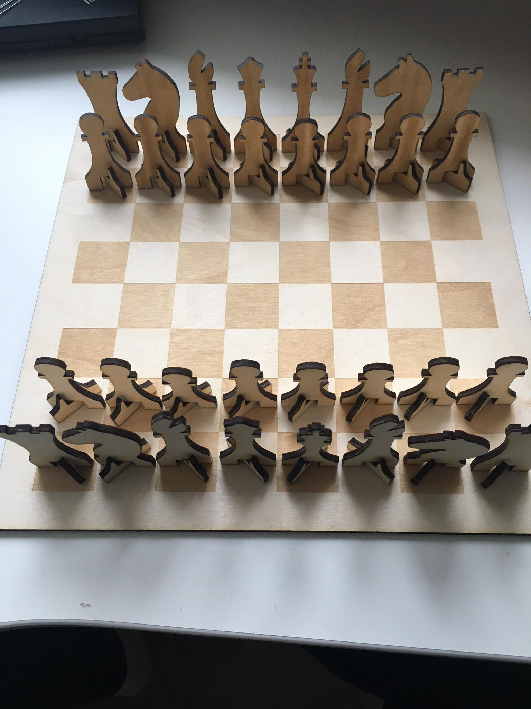
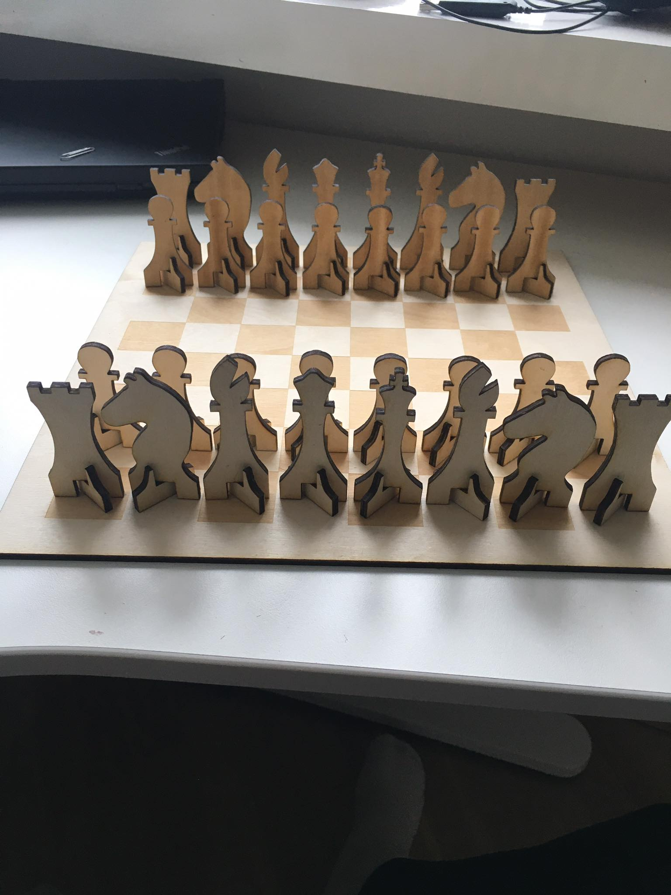
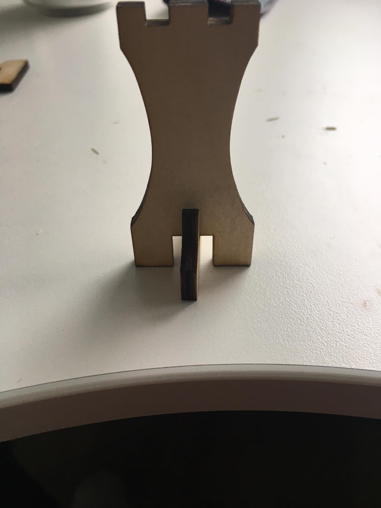
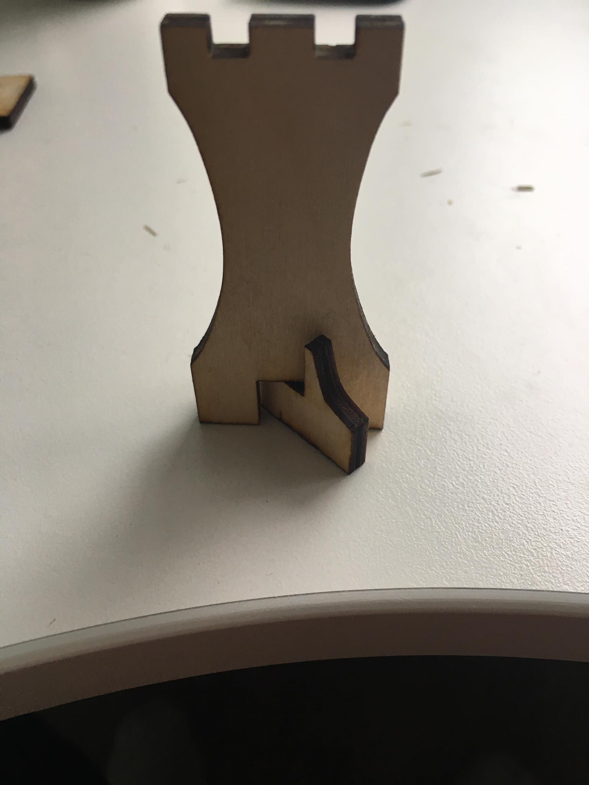

Tölvustuddur skurður
Fyrstu skrefin
Fyrst var að ákveða hvaða hönnun ætti að gera. Margar skemmtilegar hugmyndir komu til greina t.d. fyrst langaði mér að búa til eitthvað sem mundi nýtast mér vel á skrifborðið eins og stand fyrir tölvuna mína. En eftir smá leit á google þá fékk ég hugmyndina að búa til taflborð og tafl kalla og fékk innblástur af þessari síðu. Einnig notaði ég sama grunn og hann til þess að teikna tafl kallana eins og sést hér fyrir neðan.
Hönnunin sjálf
Við fengum að velja á milli þrjár mismunandi gerðir efna; birkikrossvið, akríl eða pappa. Birkikrossviðurinn var við valinu fyrir hönnunina því krossviðurinn var talinn besta efnið fyrir taflborðið og út af því að flest skákborð eru gerð úr viði. Þannig við fáum 4x300x600mm af birkikrossvið til þess að gera hönnunina okkar.
Ákveðið var að nota Fusion 360 til þess að teikna hönnunina. Byrjað var að hanna taflborðið sjálft, við fáum 300x600mm við þannig ákveðið var að hafa borðið 300x300mm þannig helmingin af efninu sem við fáum, þ.a. hinn helmingurinn fer í að búa til kallana. Hér fyrir neðan má sjá hvernig borðið var hannað.

Á myndinni hér fyrir ofan sjáum við lengdir sem voru ákveðnar fyri borðið en eftir gerð borðsins var ákveðið að gera það parametrískt út frá þessum hlutföllum.

Nú var farið í að teikna kallana, fyrst reyndi ég að teikna þá sjálfur út frá minni en það gekk ekki alveg nógu vel þannig að ég ákvað að setja nokkrar myndir af skák köllum í tvívídd og setja þær inn í fusion til þess að fylgja útlínum á. Hér fyrir neðan má sjá myndirnar sem voru notaðar og útkoman.


Notað var skipun í fusion sem heitir "fit point spline" til þess að fylgja útlínunum.
Notkun Inkscape
Notað var Inkscape til þess að færa hönnunina yfir úr fusion og þaðan í laser skeran. Stillt var svæði í Inkscape sem var nákvæmlega jafn stórt og viðurinn sem við fengum fyrir verkefnið, 300x600mm. Til þess að færa hönnunina okkar úr fusion yfir í Inkscape þá þurftum við að save-a hvern hlut sem DXF skjal og þar þurftum við að stilla kerfið sem við fundum út, hér má sjá hvernig við fundum út kerfið fyrir anakin laserskeran. Hér fyrir neðan má sjá hvernig ég notaði plássið mitt.

Það sem við þurftum að gera í Inkscape var að passa að gera "join selected nodes" fyrir alla hlutina okkar til þess að geta fræsað helmingin af köllunum okkar. Eitt vandamál sem ég lendi í við Inkscape var að ég náði ekki að lita svörtu reitina á taflborðinu. En með smá hjálp þá gerðum við það í gegnum Inkscape í stað þess að búa til nýtt borð í fusion. Það var gert með því að búa til rectangles og fylla þá svo laserinn mundi fræsa þann hluta. Svo þurfti að passa að bara útlínurnar af köllunum og borðinu væru stilltar á 0,02 til þess að laserinn mundi skera þá hluti út.
Til þess að færa loka skrána yfir í laserinn þurfti að save-a þetta skjal sem pdf og setja skjalið á minniskubb og stinga honum inn í tölvurnar sem sjá um laserana.
Útkoman og hvað mætti fara betur
Hér fyrir neðan má sjá hvernig hönnunin lýtur út.


Allt gekk frekar vel nema það var smá galli við hönnunina að ég misreiknaði hversu þykkur viðurinn væri, ég reiknaði með að hann væri 10mm en hann er í raun og veru bara 4mm. Eins og sést hér á myndinni fyrir neðan þá er soldið mikið bil á milli botn og höfuðlag kallana.

En þrátt fyrir þennan galla þá er hægt að láta þá standa með því að nota botnin aðeins öðruvísi heldur en honum var ætlaður til.

Annar galli við hönnunina er að laserskerinn getur bara fræsað aðra hliðina á tafl köllunum þannig að það getur verið soldið erfitt að þekkja muninn á hvítu og svörtu köllunum.
Það sem mætti gera betur er að gera taflborðið aðeins flottara, þá að merkja hvern reit með tölu og bókstaf o.s.frv. Annars er þetta notanlegt skákborð.
Hönnunarskjöl
Hér má finna öll skjöl sem ég notaði til þess að vinna þetta verkefni: Hönnunarskjöl
Tímaskráning
| Verkþáttur | Tími (klst.) |
|---|---|
| Finna hugmynd | 2 |
| Plana og teikna í fusion | 7 |
| Hópaverkefnið | 2 |
| Öll vinnan tengd Inkscape | 4 |
| Nota laserskeran | 1,5 |
| Setja allt saman | 0,5 |
| Skjalagerð | 5 |